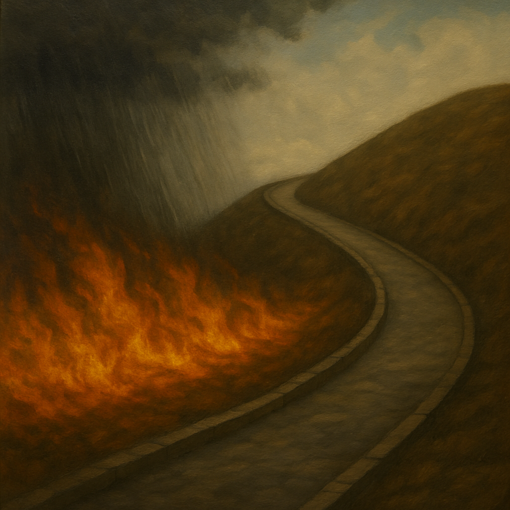

By Babak Jabbar Nezhad
Uncertainty vs. Certainty marks a further expansion of Babak Jabbar Nezhad’s symbolic poetics — not by emotional amplification, but by stripping the voice away entirely. There is no “I” here. No direct presence. Only environmental conditions, positional logic, and recursive shifts between certainty and doubt.
Each stanza begins with a structure that reads like a philosophical proposition: “There is walk-how,” “There is the rain,” “There is whom…” These are not metaphors. They are relational ontologies. The invented nouns — walk-how, suck-side, gun-side — do not describe mood or metaphor. They are spaces, spaces with tension, orientation, and existential charge. They function like topological emotional fields.
Certainty and uncertainty do not oppose each other here — they co-exist vertically. Shadow and rain are not obstacles, but symbolic overlays. The movement between “uncertain above shadow” and “certain above rain” reveals not a contradiction, but a shifting frame of meaning: certainty is not stable, it is spatial.
In the final stanza, the voice returns just slightly — not as a speaker, but as a riddle of reference: “There is whom beside how far.” This isn’t a question — it’s a collapsed locator, as if language has been drained of grammar but left with residual geometry. The final lines declare:
Nothing exists — but uncertain
Moving exists — how certain
This is not doubt. This is topological nihilism. The poem doesn’t describe uncertainty — it locates it. It doesn’t express certainty — it places it in motion.
Uncertainty vs. Certainty is not a statement, not a lament, not a puzzle. It is a map of meaning collapse — where direction, feeling, and reference blur into a structural fog. Only movement remains.
Painting by Resa based on the vision of Babak Jabbar Nezhad